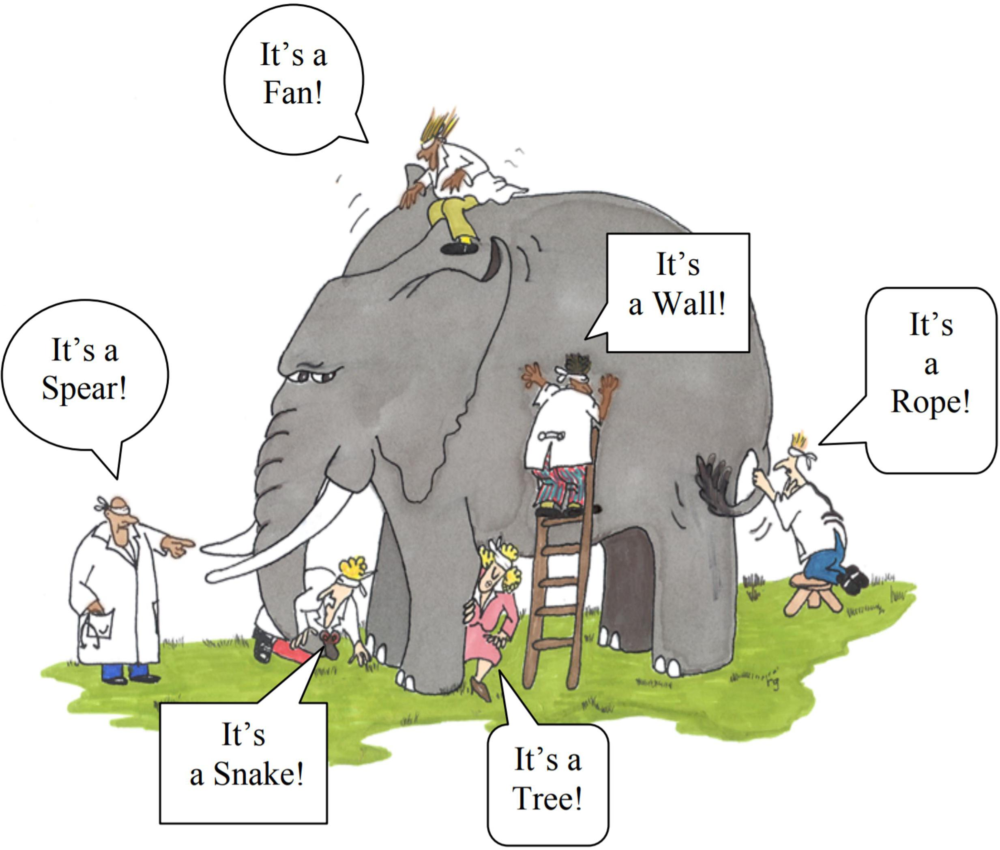
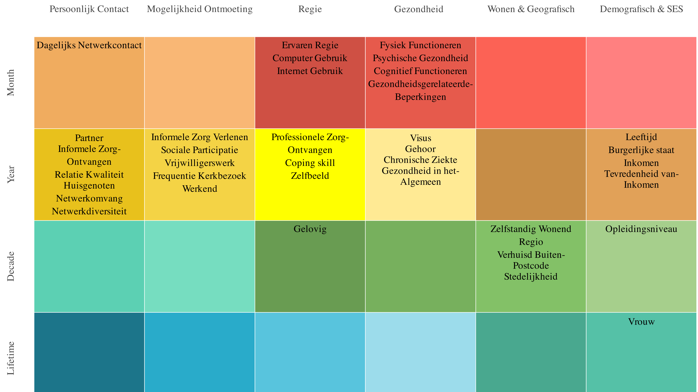

Eenzaamheid en Complexiteit
In Vogelvlucht
Bas Chatel : bas.chatel@radboudumc.nl
Table of Contents
Complexiteit
Wat bedoelen we met Complexiteit?
- Bestudeert 'de manier waarop grote groepen individuele componenten zich collectief gedragen door zich aan te passen aan elkaar en de omgeving die ze zelf creëren'
- Streeft naar het modelleren van de spatio-temporele dynamiek van een systeem om zijn inherente patronen te onderzoeken
- Noodzakelijk om de dynamiek van een systeem in silico te onderzoeken, interpreteren en manipuleren
Geheel is meer dan de som der delen

Informatie zit niet alleen in factoren, maar vooral ook in de relaties
Drie bronnen van informatie
Literatuur
- Toereikend
- Ongestructureerd
- Onderzoeken vaak niet toereikend voor deductie van causaliteit (A \(\rightarrow\) B)
Experts
- Kennis over belangrijke factoren
- Kennis over relaties
- Kennis over onderliggende wiskundige vormen
Data
- Bevat een hoop informatie
- Maar niet perse kennis/conclusies
- Structuur
- Missende waardes/factoren
- Verkeerde tijdsschaal
Allemaal deel van dezelfde puzzel

In kaart brengen van een complex probleem
Stap 1: Stel een variabele lijst samen
| fysiek functioneren | zelfstandig wonend | werkend |
| psychische gezondheid | regio (noord/oost, zuid, west) | informele zorg ontvangen |
| cognitief functioneren | gelovig | relatie kwaliteit |
| visus | opleidingsniveau | huisgenoten |
| gehoor | vrouw | netwerkomvang |
| gezondheidsgerelateerde beperkingen | dagelijks netwerkcontact | netwerkdiversiteit |
| ervaren regie | computer gebruik | verhuisd buiten postcode |
| chronische ziekten | internet gebruik | stedelijkheid |
| gezondheid in het algemeen | partner | burgerlijke staat |
| professionele zorg ontvangen | informele zorg verlenen | inkomen |
| coping skill | sociale participatie | tevredenheid van inkomen |
| zelfbeeld | vrijwilligerswerk | eenzaamheid |
| leeftijd | frequentie kerkbezoek |
Stap 2: De Spatio-Temporele schaal

Stap 3: Breng de relaties in kaart (voorbeeld alzheimer project)

Stap 4: Modelleer dynamiek in het systeem
- Wiskundige formules die dynamiek over tijd berekenen
- Moeten getrained en getoetst worden over data
- Als alle stukjes van de puzzel samenkomen:
- In silico interventie toetsing
- Synergetische effecten evalueren
- etc.,
Bedankt voor het luisteren, zijn er vragen?